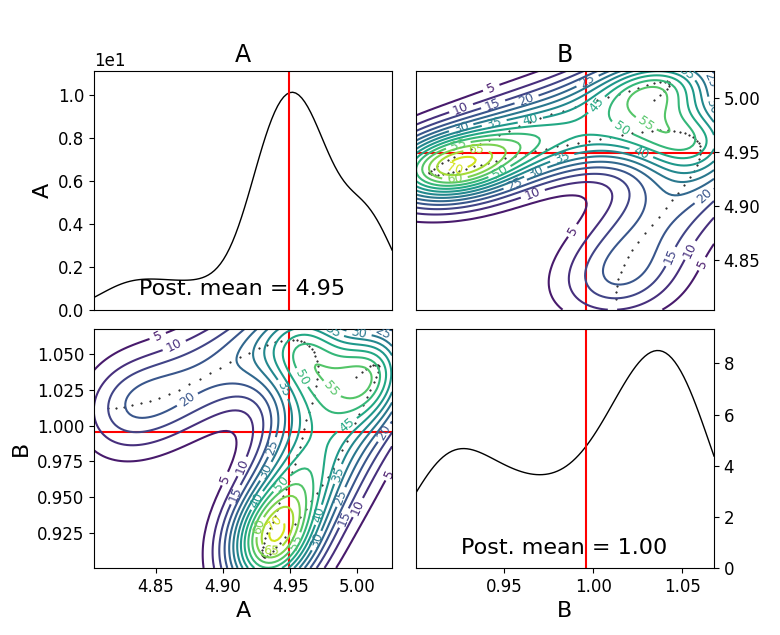
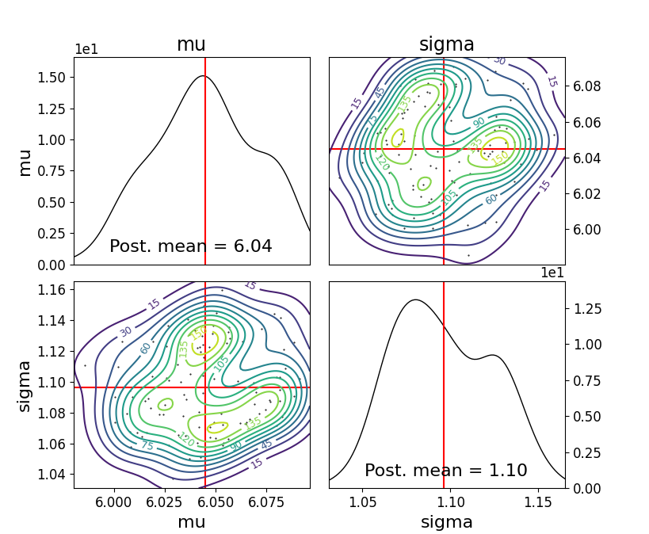
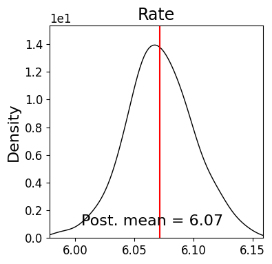

Examples
Example inference for user-defined Gaussian / G-and-K models / Array simulations
Gaussian model
Say we have a set of observations which we know are generated from a gaussian distribution. We can use the following setup to infer the model parameters.
import logging
from numbers import Number
import numpy as np
import scipy
from abcpy.probabilisticmodels import ProbabilisticModel, Continuous, InputConnector
import torch
from torch.autograd.functional import jacobian
class Gaussian(ProbabilisticModel, Continuous):
def __init__(self, parameters, name='Gaussian'):
# We expect input of type parameters = [mu, sigma]
if not isinstance(parameters, list):
raise TypeError('Input of Normal model is of type list')
if len(parameters) != 2:
raise RuntimeError('Input list must be of length 2, containing [mu, sigma].')
input_connector = InputConnector.from_list(parameters)
super().__init__(input_connector, name)
self.ordered_transforms = [False, torch.exp]
self.ordered_inverse_transforms = [False, torch.log]
def _check_input(self, input_values):
# Check whether input has correct type or format
if len(input_values) != 2:
raise ValueError('Number of parameters of Normal model must be 2.')
# Check whether input is from correct domain
mu = input_values[0]
sigma = input_values[1]
if sigma < 0:
return False
return True
def forward_simulate(self, input_values, k, rng=np.random.RandomState()):
# Extract the input parameters
# input_values = self.transform_variables(input_values) # do this outside in inference.
mu = input_values[0]
sigma = input_values[1]
np.array(rng.normal(mu, sigma, k))
result = self.normal_model_pytorch([float(input_value) for input_value in input_values], k)#[np.array([x]) for x in vector_of_k_samples]
return result
def normal_model_pytorch(self, input_values, n, return_grad = False):
values = []
for n in range(0,n):
value = []
mu = torch.tensor(input_values[0], requires_grad = True)
sigma = torch.tensor(input_values[1], requires_grad = True)
variables = [mu,sigma]
yval = torch.randn(1)*sigma + mu
value.append(yval.item())
values.append(np.array(value))
return values
def grad_forward_simulate(self, input_values, k, rng=np.random.RandomState()):
# Takes input in the form: [a,....,z]
# Outputs: array: [x1, x2, ...... ,xn, [dx1/dtheta1, dx1/dtheta2], ...... [dxn/dtheta1, dxn/dtheta2],]
result = self.grad_normal_model_pytorch([float(input_value) for input_value in input_values], k)#[np.array([x]) for x in vector_of_k_samples]
return result
def grad_normal_model_pytorch(self, input_values, n, return_grad = False):
values = []
gradvalues = []
for n in range(0,n):
mu = torch.tensor(input_values[0], requires_grad = True)
sigma = torch.tensor(input_values[1], requires_grad = True)
z = torch.randn(1)
variables = [mu,sigma]
yval = z*sigma + mu
values.append(yval.item())
yval.backward()
gradvalue = []
for var in variables:
gradvalue.append(var.grad.item())
gradvalues.append(gradvalue)
return values + gradvalues
def _check_output(self, values):
if not isinstance(values, Number):
raise ValueError('Output of the normal distribution is always a number.')
# At this point values is a number (int, float); full domain for Normal is allowed
return True
def get_output_dimension(self):
return 1
def jacobian_list(self):
return self.ordered_transforms
def transform_list(self):
return self.ordered_transforms
def inverse_transform_list(self):
return self.ordered_inverse_transforms
and then call run the following:
import numpy as np
from abcpy.approx_lhd import EnergyScore, KernelScore
from abcpy.backends import BackendDummy
from abcpy.continuousmodels import Normal, LogNormal
from abcpy.inferences import adSGLD, SGLD
from abcpy.statistics import Identity
from Gaussian_model import Gaussian
# setup backend
dummy = BackendDummy()
mu = Normal([5, 1], name='mu')
sigma = LogNormal([1,1], name='sigma')
model = Gaussian([mu, sigma])
stat_calc = Identity(degree=2, cross=False)
dist_calc = EnergyScore(stat_calc, model, 1)
y_obs = model.forward_simulate([6,1], 100, rng=np.random.RandomState(8))
sampler = adSGLD([model], [dist_calc], dummy, seed=1)
journal = sampler.sample([y_obs], 100, 100, 2000, step_size=0.0001, w_val = 300, diffusion_factor=0.01, path_to_save_journal="tmp.jnl")
journal.plot_posterior_distr(path_to_save="posterior.png")
journal.traceplot()
This generates a posterior plot of the sampled parameters for the mean and standard deviation. Here we generate our y_obs directly from the same model, however the user could replace this with any properly formatted dataset and the sampler should converge whenever the prior values of mu and sigma provide reasonable coverage of the true parameters and the model is properly specified (ie the observations are actually normally distributed) (note here that the values for w_val, step_size and burn in may need to be adjusted to ensure convergence depending on how close your priors are to the true distribution)
We give below another example using the kernelscore with a user defined rbf kernel using the SGLD algorithm
import numpy as np
import torch
from abcpy.approx_lhd import SynLikelihood, EnergyScore, KernelScore
from abcpy.backends import BackendDummy
from abcpy.continuousmodels import Normal, LogNormal
from abcpy.inferences import adSGLD, SGLD
from abcpy.statistics import Identity
from Gaussian_model import Gaussian
def BetaNormNeg(x1, x2):
assert len(x2.shape) == 1, "x2 should be a 1D tensor"
assert x1.shape[1:] == x2.shape, "The last dimensions of x1 and x2 should match"
# Subtract x2 from all entries in x1 and compute the beta norm
diff = x1 - x2
norm_beta = torch.sum(torch.abs(diff).pow(2), dim=-1).pow(beta/2)
return -1*norm_beta
# setup backend
dummy = BackendDummy()
# define a uniform prior distribution
mu = Normal([5, 1], name='mu')
sigma = LogNormal([1,1], name='sigma')
model = Gaussian([mu, sigma])
stat_calc = Identity(degree=2, cross=False)
beta = 1
dist_calc = KernelScore(stat_calc, model, BetaNormNeg)
y_obs = model.forward_simulate([6,1], 100, rng=np.random.RandomState(8)) # Correct
sampler = SGLD([model], [dist_calc], dummy, seed=1)
journal = sampler.sample([y_obs], 100, 100, 2000, step_size=0.00001, w_val = 300, diffusion_factor=0.01, path_to_save_journal="tmp.jnl")
journal.plot_posterior_distr(path_to_save="posterior.png")
journal.traceplot()
G-and-K Model
We define another model below for a simple g and k model [M. A. Haynes et al, Robustness of ranking and selection rules using generalised g-and-k distributions. Journal of Statistical Planning and Inference, 1997.] with four input parameters The code is provided here:
import torch
import logging
from numbers import Number
import numpy as np
import scipy
from abcpy.probabilisticmodels import ProbabilisticModel, Continuous, InputConnector
class G_and_K(ProbabilisticModel, Continuous):
def __init__(self, parameters, name='G_and_K'):
# We expect input of type parameters = [mu, sigma]
if not isinstance(parameters, list):
raise TypeError('Input of Normal model is of type list')
if len(parameters) != 4:
raise RuntimeError('Input list must be of length 4, containing [A, B, g, k].')
input_connector = InputConnector.from_list(parameters)
super().__init__(input_connector, name)
self.ordered_transforms = [False, torch.exp, False, False]
self.ordered_inverse_transforms = [False, torch.log, False, False]
def _check_input(self, input_values):
# Check whether input has correct type or format
if len(input_values) != 4:
raise ValueError('Number of parameters of Normal model must be 4.')
# Check whether input is from correct domain
if input_values[1] < 0:
return False
return True
def _check_output(self, values):
return True
def get_output_dimension(self):
return 1
def g_and_k_quantile(self, y, A, B, g, k):
c1 = 1/torch.sqrt(torch.tensor(2.0))
c2 = -1/2
c3 = -1/(6*torch.sqrt(torch.tensor(2.0)))
c4 = -1/24
return A + B * (1 + c1*y + c2*y**2 + c3*y**3 + c4*y**4) * (1 + y**2)**k * torch.exp(g*y)
def forward_simulate(self, params, n, rng=None, to_list=True):
# Sample from standard normal
y = torch.randn(n)
# Return quantile values
if to_list:
return self.g_and_k_quantile(y, params[0], params[1], params[2],params[3]).tolist()
else:
return self.g_and_k_quantile(y, params[0], params[1], params[2],params[3])
def grad_forward_simulate(self,params, n, rng=None):
A, B, g, k = torch.tensor(float(params[0])), torch.tensor(float(params[1])), torch.tensor(float(params[2])), torch.tensor(float(params[3]))
A.requires_grad_(True)
B.requires_grad_(True)
g.requires_grad_(True)
k.requires_grad_(True)
samples = self.forward_simulate([A, B, g, k], n, to_list=False)
grads = []
for s in samples:
s.backward(retain_graph=True)
grads.append((A.grad.item(), B.grad.item(), g.grad.item(), k.grad.item()))
A.grad.zero_()
B.grad.zero_()
g.grad.zero_()
k.grad.zero_()
return samples.tolist() + grads
def transform_list(self):
return self.ordered_transforms
def inverse_transform_list(self):
return self.ordered_inverse_transforms
def jacobian_list(self):
return self.ordered_transforms
and then running the following to infer the the A and B parameter
dummy = BackendDummy()
A = Normal([5, 1], name='A')
B = LogNormal([1,1], name='B')
#g = Normal([0, 1], name='g')
#k = Normal([0, 1], name='k')
self.model = G_and_K([A, B, 0, 1])
# define sufficient statistics for the model
stat_calc = Identity(degree=2, cross=False)
dist_calc = EnergyScore(stat_calc, self.model, 1)
# create fake observed data
self.y_obs = self.model.forward_simulate([5,1,0,1], 100, rng=np.random.RandomState(8)) # Correct
self.sampler = adSGLD([self.model], [dist_calc], dummy, seed=1)#basic_adSGLD([self.model], [dist_calc], dummy, seed=1)
journal = self.sampler.sample([self.y_obs], 100, 100, 1000, step_size=0.0003, w_val = 300, diffusion_factor=0.01, path_to_save_journal="tmp.jnl")
journal.plot_posterior_distr(path_to_save="posterior.png")
journal.traceplot()
Producing the following output for our plot, correctly estimating the posterior values 5 and 1 (increasing the number of posterior samples will increase the accuracy of this posterior distribution even further)
{kind=link}
Array simulations
The Scoring rule setup allows for user defined models which produce multiple elements per simulation, we give an example below of a function which produces pairs of values from a gaussian distribution with the same parameters. This setup can be used to analyse models which produce time series (for example in a lorenz 95 model) or which have other correlated variables.
import logging
from numbers import Number
import numpy as np
import scipy
from abcpy.probabilisticmodels import ProbabilisticModel, Continuous, InputConnector
import torch
from torch.autograd.functional import jacobian
class DualGaussian(ProbabilisticModel, Continuous):
def __init__(self, parameters, name='Gaussian'):
# We expect input of type parameters = [mu, sigma]
if not isinstance(parameters, list):
raise TypeError('Input of Normal model is of type list')
if len(parameters) != 2:
raise RuntimeError('Input list must be of length 2, containing [mu, sigma].')
input_connector = InputConnector.from_list(parameters)
super().__init__(input_connector, name)
self.ordered_transforms = [False, torch.exp]
self.ordered_inverse_transforms = [False, torch.log]
def _check_input(self, input_values):
# Check whether input has correct type or format
if len(input_values) != 2:
raise ValueError('Number of parameters of Normal model must be 2.')
# Check whether input is from correct domain
mu = input_values[0]
sigma = input_values[1]
if sigma < 0:
return False
return True
def forward_simulate(self, input_values, k, rng=np.random.RandomState()):
# Extract the input parameters
result = self.normal_model_pytorch([float(input_value) for input_value in input_values], k)#[np.array([x]) for x in vector_of_k_samples]
return result
def normal_model_pytorch(self, input_values, n, return_grad = False):
values = []
for n in range(0,n):
mu = torch.tensor(input_values[0], requires_grad = True)
sigma = torch.tensor(input_values[1], requires_grad = True)
variables = [mu,sigma]
yval1 = torch.randn(1)*sigma + mu
yval2 = torch.randn(1)*sigma + mu
value = np.array([yval1.item(),yval2.item()])
values.append(value)
return values
def grad_forward_simulate(self, input_values, k, rng=np.random.RandomState()):
# Takes input in the form: [a,....,z]
# Outputs: array: [x1, x2, ...... ,xn, [dx1/dtheta1, dx1/dtheta2], ...... [dxn/dtheta1, dxn/dtheta2],]
result = self.grad_normal_model_pytorch([float(input_value) for input_value in input_values], k)#[np.array([x]) for x in vector_of_k_samples]
return result
def grad_normal_model_pytorch(self, input_values, n, return_grad = False):
values = []
gradvalues = []
for n in range(0,n):
mu1 = torch.tensor(input_values[0], requires_grad = True)
sigma1 = torch.tensor(input_values[1], requires_grad = True)
z1 = torch.randn(1)
variables1 = [mu1,sigma1]
yval1 = z1*sigma1 + mu1
yval1.backward()
mu2 = torch.tensor(input_values[0], requires_grad = True)
sigma2 = torch.tensor(input_values[1], requires_grad = True)
z2 = torch.randn(1)
variables2 = [mu2,sigma2]
yval2 = z2*sigma2 + mu2
yval2.backward()
values.append([yval1.item(),yval2.item()])
gradvalue1 = []
for var in variables1:
gradvalue1.append(var.grad.item())
gradvalue2 = []
for var in variables2:
gradvalue2.append(var.grad.item())
gradvalues.append([gradvalue1, gradvalue2])
return values + gradvalues
def _check_output(self, values):
if not isinstance(values, Number):
raise ValueError('Output of the normal distribution is always a number.')
# At this point values is a number (int, float); full domain for Normal is allowed
return True
def get_output_dimension(self):
return 1
def jacobian_list(self):
return self.ordered_transforms
def transform_list(self):
return self.ordered_transforms
def inverse_transform_list(self):
return self.ordered_inverse_transforms
and this can be called as before with
import numpy as np
from abcpy.approx_lhd import SynLikelihood, EnergyScore, KernelScore
from abcpy.backends import BackendDummy
from abcpy.continuousmodels import Normal, LogNormal
from abcpy.inferences import adSGLD, SGLD
from abcpy.statistics import Identity
from DualGaussianFile import DualGaussian
# setup backend
dummy = BackendDummy()
# define a uniform prior distribution
mu = Normal([5, 1], name='mu')
sigma = LogNormal([1,1], name='sigma')
model = Gaussian([mu, sigma])
stat_calc = Identity(degree=2, cross=False)
dist_calc = EnergyScore(stat_calc, model, 1)
y_obs = model.forward_simulate([6,1], 100, rng=np.random.RandomState(8)) # Correct
print(y_obs)
sampler = SGLD([model], [dist_calc], dummy, seed=1)
journal = sampler.sample([y_obs], 100, 100, 2000, step_size=0.0001, w_val = 15, diffusion_factor=0.01, path_to_save_journal="tmp.jnl")
journal.plot_posterior_distr(path_to_save="posterior.png")
journal.traceplot()
producing the following output plot:
{kind=link}
Time Series simulation
We develop the following toy time series simulator which simulates a time series starting at zero and adding a parameter rate and a standard normal(0,1) error term at each iteration over t steps.
import logging
from numbers import Number
import numpy as np
from abcpy.probabilisticmodels import ProbabilisticModel, Continuous, InputConnector
import torch
class IncreasingTimeSeries(ProbabilisticModel, Continuous):
def __init__(self, parameters, timesteps, name='IncreasingTimeSeries'):
# We expect input of type parameters = [rate]
if not isinstance(parameters, list):
raise TypeError('Input of IncreasingTimeSeries model is of type list')
if len(parameters) != 1:
raise RuntimeError('Input list must be of length 1, containing [rate].')
input_connector = InputConnector.from_list(parameters)
super().__init__(input_connector, name)
self.ordered_transforms = [False]
self.ordered_inverse_transforms = [False]
self.timesteps = timesteps # Setting the length of the time series
def _check_input(self, input_values):
if len(input_values) != 1:
raise ValueError('Number of parameters of IncreasingTimeSeries model must be 1.')
return True
def forward_simulate(self, input_values, n, rng=np.random.RandomState()):
rate = input_values[0]
results = self.simulate_time_series(n, rate)
return results
def grad_forward_simulate(self, input_values, n, rng=np.random.RandomState()):
rate = input_values[0]
results = self.grad_simulate_time_series(n, rate)
return results
def simulate_time_series(self, n, rate):
fullvalues = []
for x in range(0,n):
values = []
current_value = 0
for _ in range(self.timesteps):
noise = torch.randn(1)
current_value += rate + noise
values.append(current_value.item())
fullvalues.append(values)
return fullvalues
def grad_simulate_time_series(self, n, rate):
fullvalues = []
fullgrad = []
for x in range(0,n):
rate_tensor = torch.tensor(rate, requires_grad=True)
current_value = torch.tensor(0.0, requires_grad=True)
values = []
gradvalues = []
for _ in range(self.timesteps):
noise = torch.randn(1)
new_value = current_value + rate_tensor + noise
new_value.backward(retain_graph=True)
values.append(new_value.item())
gradvalues.append([rate_tensor.grad.item()])
# Update current_value without modifying it in-place
current_value = new_value.detach().clone().requires_grad_(True)
# Zero out the gradients to ensure the accumulation does not happen
rate_tensor.grad.zero_()
fullvalues.append(values)
fullgrad.append(gradvalues)
return fullvalues + fullgrad
def _check_output(self, values):
# Check that the output is a list (or iterable)
if not isinstance(values, (list, tuple, np.ndarray)):
return False
return True
def get_output_dimension(self):
return self.timesteps
def jacobian_list(self):
return self.ordered_transforms
def transform_list(self):
return self.ordered_transforms
def inverse_transform_list(self):
return self.ordered_inverse_transforms
We generate a set of 30 observations with rate parameter 6.0 each of length t=4 and run an sgld sampler on this time series with the following parameters n samples = 300, n samples per param = 100, burn in = 300, step size=0.0001, w val = 50. We run this sampler with a normal(9,3) prior parameter on rate and get the following output
{kind=link}
Showing that our approach is indeed able to correctly infer the parameters for a generative time-series model. (note the variance in observations, increasing n_obs to 100 gives even closer estimations to the true parameter 6.0)